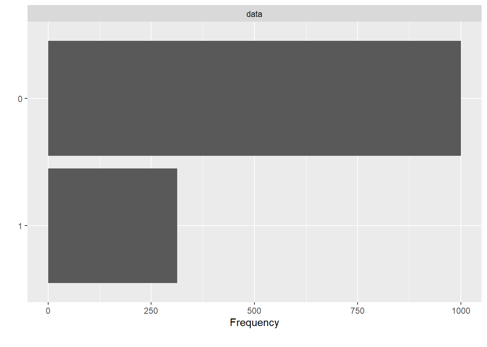
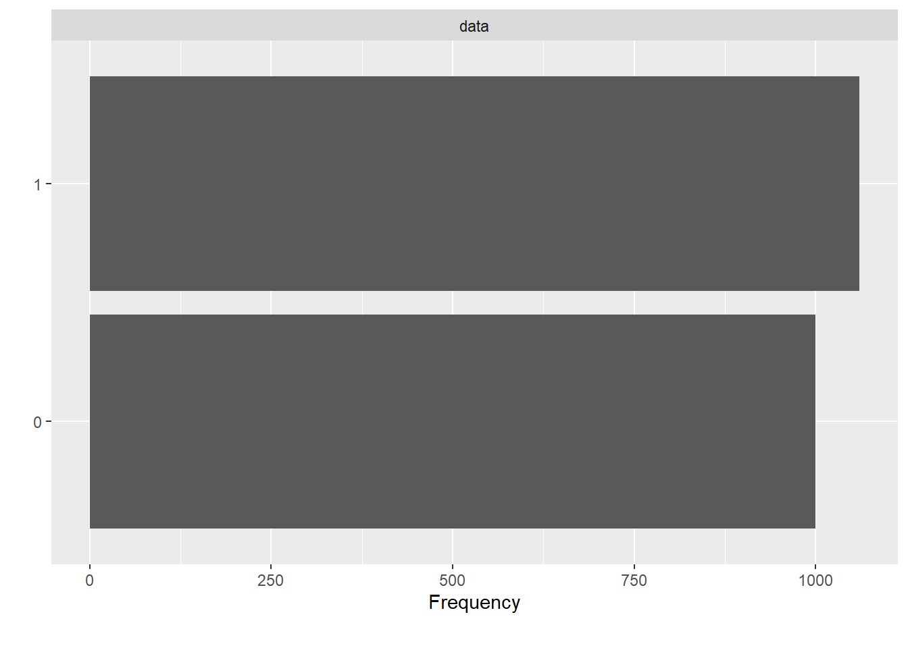
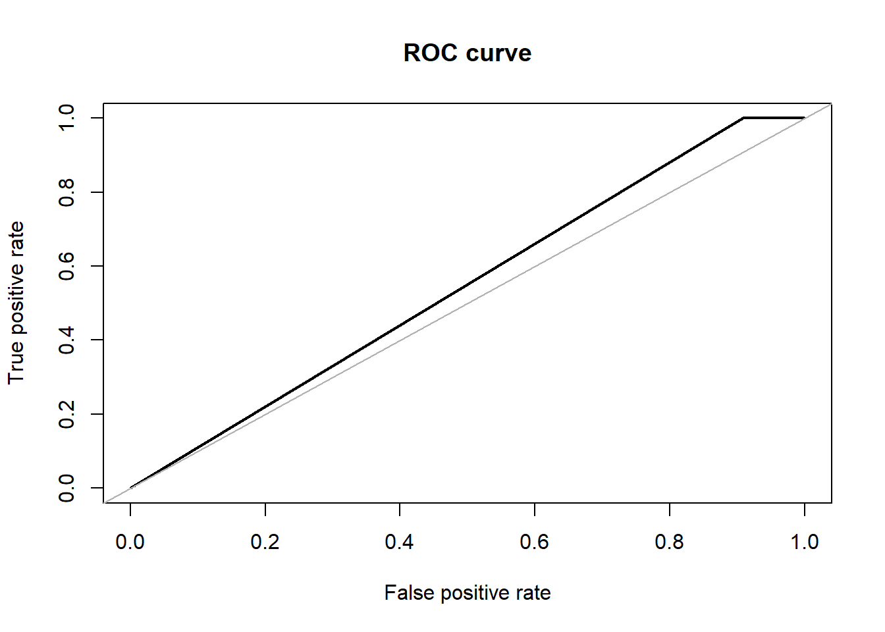
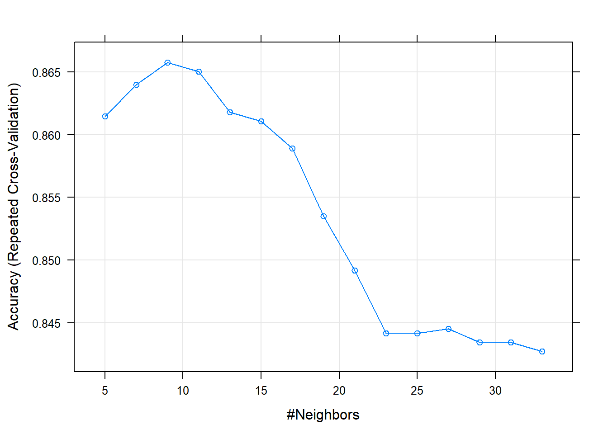
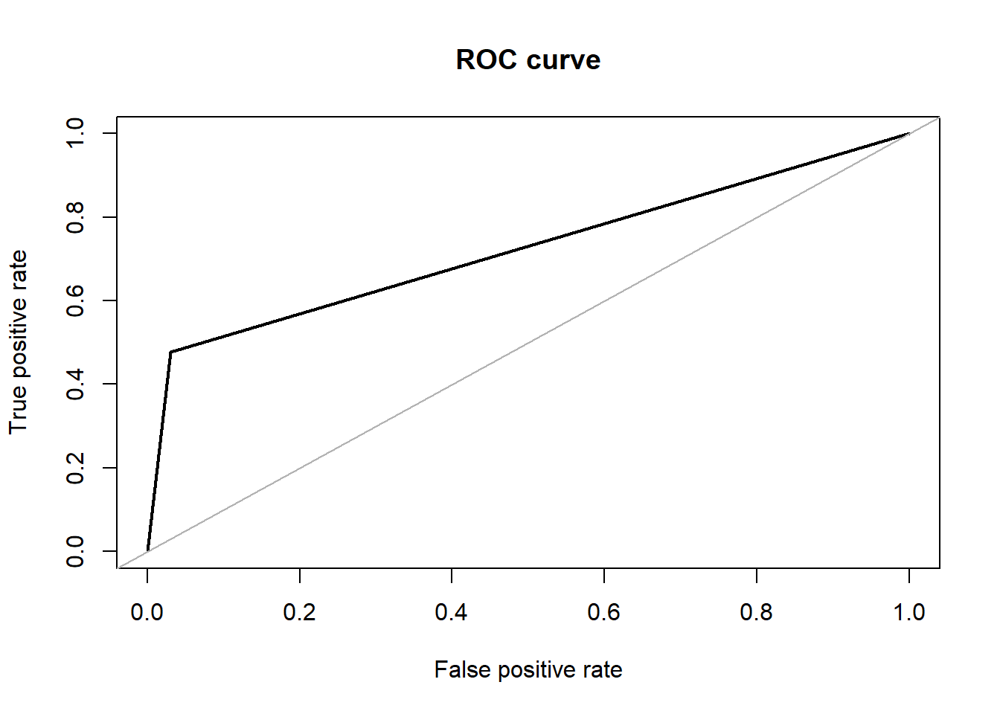
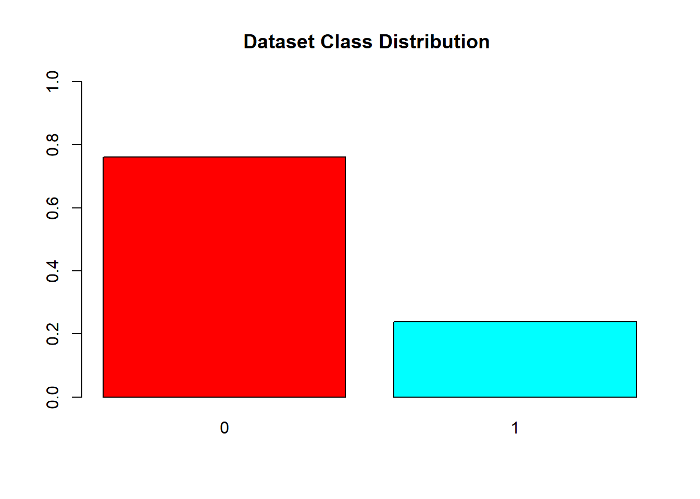
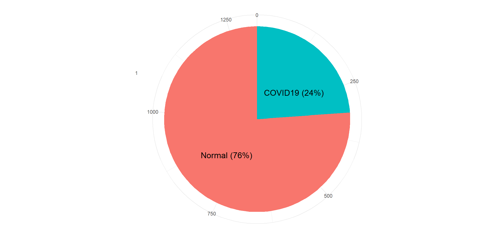
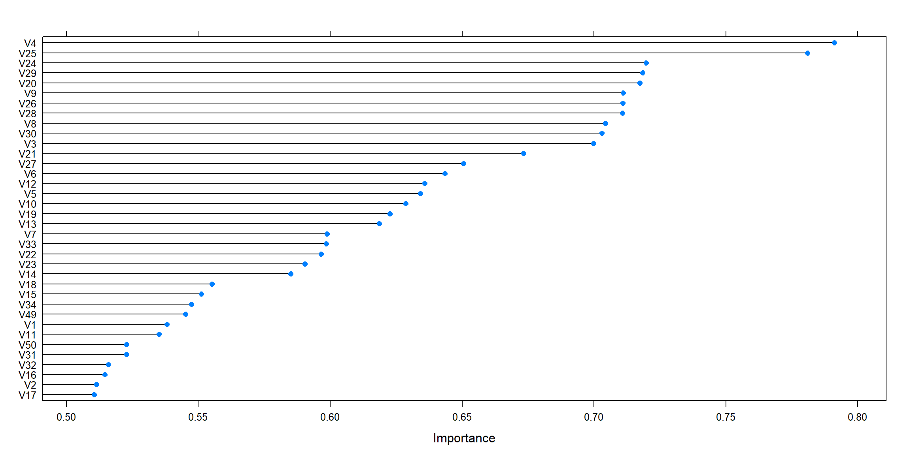
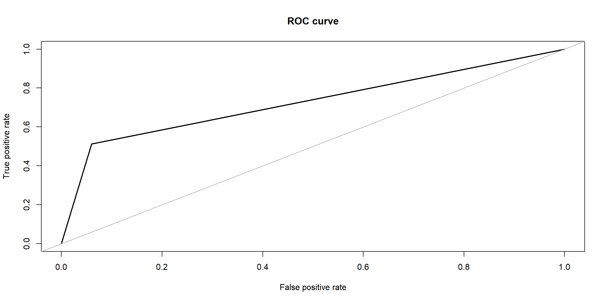
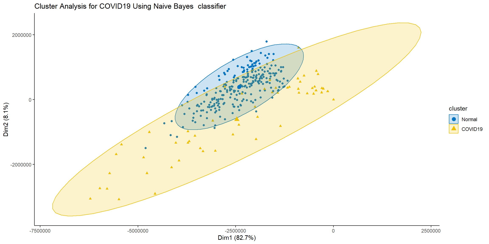

Classification
Models
library(magick)
library(ggplot2)
library(funModeling)
library(DataExplorer)
library(e1071)
library(imbalance)
library(caret)
library(wvtool)
library(imager)
library(ROSE)
library(tidyverse)
library(repr)
library(factoextra)
library(pander)
library(klaR)
library(janitor)
library(mlbench)
library(MLmetrics)
library(randomForest)
library(rpart)
library(rpart.plot)
library(pROC)
library(plotROC)SVM
We experimented with Support Vector Classifiers with Radial Basis function as kernel. The following diagram shows the data before over-sampling.
load('covid_data_new_masked')
dataset <- covid_data
plot_bar(dataset$V59)
Before feeding data onto the classifier, we oversampled with AdaSyn method.
#Over-sampling
df.adasyn <- oversample(dataset, method = "ADASYN", classAttr = "V59")
df.adasyn$V59 = factor(df.adasyn$V59, levels = c(0, 1))
plot_bar(df.adasyn$V59)
#train-test split
index <- 1:nrow(df.adasyn)
testindex <- sample(index, trunc(length(index)/3))
testset <- df.adasyn[testindex,]
trainset <- df.adasyn[-testindex,]For hyper-parameter tuning, we have kept value of cost = 1 and gamma = 0.5 following a similar approach to [1].
set.seed(825)
#Training the model to the Training set
svm_fit_ovs <- svm(V59~., kernel = 'radial',
data = trainset, scale=TRUE, cachesize = 200,
probability = TRUE, gamma = 0.1, cost = 1)
#Predicting the test set results
svm.pred.ovs <- predict(svm_fit_ovs, testset[,-59], probability = TRUE)For the evaluation part, we calculated Accuracy, F1-Score, Precision, Recall and AUC/ROC. The confusion matrix shows that SVM performs with approx. 53% of accuracy whereas the Area Under ROC is approx. 54% as well.
#Evaluation
ROSE::accuracy.meas(response = testset$V59, predicted = svm.pred.ovs)##
## Call:
## ROSE::accuracy.meas(response = testset$V59, predicted = svm.pred.ovs)
##
## Examples are labelled as positive when predicted is greater than 0.5
##
## precision: 0.523
## recall: 1.000
## F: 0.344ROSE::roc.curve(testset$V59, svm.pred.ovs, plotit = T)
## Area under the curve (AUC): 0.546caret::confusionMatrix(svm.pred.ovs, testset$V59, positive = '1')## Confusion Matrix and Statistics
##
## Reference
## Prediction 0 1
## 0 30 0
## 1 297 359
##
## Accuracy : 0.5671
## 95% CI : (0.529, 0.6045)
## No Information Rate : 0.5233
## P-Value [Acc > NIR] : 0.01195
##
## Kappa : 0.0956
##
## Mcnemar's Test P-Value : < 2e-16
##
## Sensitivity : 1.00000
## Specificity : 0.09174
## Pos Pred Value : 0.54726
## Neg Pred Value : 1.00000
## Prevalence : 0.52332
## Detection Rate : 0.52332
## Detection Prevalence : 0.95627
## Balanced Accuracy : 0.54587
##
## 'Positive' Class : 1
## kNN
K-Neigherst Neighbour is one of the models used for classification. kNN has been successfully used in tasks where texture-based descriptors are used [2]. In kNN classification, we expect that the classifier will examine the k nearest neighbors and return the class labels associated with the majority of k nearest neighbor. The accuracy of the model depends heavily on k, i.e. the number of nearest neighbors to consider for classification purpose. So, each neighbor adds a vote or a confidence towards the classification of a query instance. We use this model, in hope that the features extracted above captures the specific discriminatory properties of the lung area and on similar note the nearest neighbors will capture the same properties.
We initially split the data by a proportion of 30:70 distributed among both the classes for test and training purpose.
dim(glass.df)## [1] 1313 59# all the independent variables are numbers
# we will convert the type variable which is the response variable as factor
glass.df$V59<- as.factor(glass.df$V59) # 7 labels
# training and test data 70:30
set.seed(123)
ind = sample(2, nrow(glass.df), replace = TRUE, prob=c(0.7,0.3))
train.df = glass.df[ind == 1,]
test.df = glass.df[ind == 2,]#Visualizing distribution of each class
barplot(prop.table(table(glass.df$V59)),
col = rainbow(2),
ylim = c(0,1),
main = "COVID dataset Class Distribution")
resTable <- glass.df %>% tabyl(V59)
resTable$labels <- paste0(resTable$V59, " (", scales::percent(resTable$percent), ") ")
resTable %>%ggplot(aes(x=factor(1),y=n, fill=V59))+
geom_bar(width = 1, stat='identity')+
coord_polar("y")+
theme_minimal()+
geom_text(aes(y = c(800,200),
label = labels), size=5)+
theme(legend.position = 'none')+
labs(y='', x='')
barplot(prop.table(table(train.df$V59)),
col = rainbow(2),
ylim = c(0,1),
main = "Train Class Distribution")
resTable <- train.df %>% tabyl(V59)
resTable$labels <- paste0(resTable$V59, " (", scales::percent(resTable$percent), ") ")
resTable %>%ggplot(aes(x=factor(1),y=n, fill=V59))+
geom_bar(width = 1, stat='identity')+
coord_polar("y")+
theme_minimal()+
geom_text(aes(y = c(800,200),
label = labels), size=5)+
theme(legend.position = 'none')+
labs(y='', x='')
# Create data for the graph.barplot(prop.table(table(test.df$V59)),
col = rainbow(2),
ylim = c(0,1),
main = "Test Class Distribution")
For training, to tackle the class imbalance problem and we use 10 cross validation with 3 repeats. That is data will be split entirely 3 times, and for each of the 3 times, 10-fold cross validation is done for validation.
trctrl <- trainControl(method = "repeatedcv", number = 10, repeats = 3)For evaluation of K, we decide at train time, the number that gives the highest accuracy. In our case, k=9 gave us the best accuracy.
knn_fit <- train(V59 ~., data = train.df, method = "knn",
trControl=trctrl,
preProcess = c("center", "scale"),
tuneLength = 15)summary(knn_fit)## Length Class Mode
## learn 2 -none- list
## k 1 -none- numeric
## theDots 0 -none- list
## xNames 58 -none- character
## problemType 1 -none- character
## tuneValue 1 data.frame list
## obsLevels 2 -none- character
## param 0 -none- listplot(knn_fit)
The pipeline of KNN model we use, additionally centers and scales the data. The unseen instances are also subject to the same fit.
We also use a setting where the response is not a discrete positive or negative output but, gives the prediction confidence(probability) of the classifier for both of the classes.
Results: We test the model with the test data that was initially split out from the overall dataset
test_pred <- predict(knn_fit, newdata = test.df)
summary(test_pred)## 0 1
## 334 53confusionMatrix(test_pred, test.df$V59)## Confusion Matrix and Statistics
##
## Reference
## Prediction 0 1
## 0 286 48
## 1 9 44
##
## Accuracy : 0.8527
## 95% CI : (0.8134, 0.8865)
## No Information Rate : 0.7623
## P-Value [Acc > NIR] : 7.525e-06
##
## Kappa : 0.5242
##
## Mcnemar's Test P-Value : 4.823e-07
##
## Sensitivity : 0.9695
## Specificity : 0.4783
## Pos Pred Value : 0.8563
## Neg Pred Value : 0.8302
## Prevalence : 0.7623
## Detection Rate : 0.7390
## Detection Prevalence : 0.8630
## Balanced Accuracy : 0.7239
##
## 'Positive' Class : 0
## roc.curve(test.df$V59, test_pred, plotit = T)
## Area under the curve (AUC): 0.724Tree Classifiers
Random Forest
Random forest is one of the algorithms we tried to apply on the lbp features that was extracted from the X-ray images. The implementation was done through the ‘randomForest’ package that is available in R. The package uses Breiman’s method of random forests for classification. But this package has the flexibility to be applied in a regression problem as well. In the default parameter setting, the no. of trees that the algorithm learns is 200. With that, we achieved an accuracy of about 87.84% with an F1 score of 0.6825 in our dataset. The area under the ROC curve in this case was 0.764. On the over-sampled data, the accuracy dropped to 75.00% with an F1 score of 0.6771. The area under the ROC curve in this case is 0.748.
#Visualizing distribution of each class
barplot(prop.table(table(covid_data$V59)),
col = rainbow(2),
ylim = c(0,1),
main = "Dataset Class Distribution ")
barplot(prop.table(table(train$V59)),
col = rainbow(2),
ylim = c(0,1),
main = "Training Class Distribution ")
barplot(prop.table(table(test$V59)),
col = rainbow(2),
ylim = c(0,1),
main = "Test Class Distribution")
#Over Sampling
over_train = ovun.sample(V59~., data = train, method = "over")$data
table(over_train$V59)##
## 0 1
## 750 755over_test = ovun.sample(V59~., data = test, method = "over")$data
table(over_test$V59)##
## 0 1
## 250 246barplot(prop.table(table(over_train$V59)),
col = rainbow(2),
ylim = c(0,1),
main = "Oversampled training class Distribution")
barplot(prop.table(table(over_test$V59)),
col = rainbow(2),
ylim = c(0,1),
main = "Oversampled testing class Distribution")
#Random Forest
rftrain <- randomForest(V59~.,data = train)
rftrain.pred <- predict(rftrain, test)## Confusion Matrix and Statistics
##
## Reference
## Prediction 0 1
## 0 246 36
## 1 4 43
##
## Accuracy : 0.8784
## 95% CI : (0.8381, 0.9117)
## No Information Rate : 0.7599
## P-Value [Acc > NIR] : 4.981e-08
##
## Kappa : 0.6133
##
## Mcnemar's Test P-Value : 9.509e-07
##
## Sensitivity : 0.5443
## Specificity : 0.9840
## Pos Pred Value : 0.9149
## Neg Pred Value : 0.8723
## Precision : 0.9149
## Recall : 0.5443
## F1 : 0.6825
## Prevalence : 0.2401
## Detection Rate : 0.1307
## Detection Prevalence : 0.1429
## Balanced Accuracy : 0.7642
##
## 'Positive' Class : 1
## roc.curve(test$V59, rftrain.pred, plotit = T, main="ROC curve for Raw dataset")
## Area under the curve (AUC): 0.764rftrain_over <- randomForest(V59~.,data = over_train)
rftrain_over.pred <- predict(rftrain_over, over_test)#Evaluation with test
confusionMatrix(predict(rftrain_over, over_test), over_test$V59, positive = '1', mode = "everything")## Confusion Matrix and Statistics
##
## Reference
## Prediction 0 1
## 0 242 116
## 1 8 130
##
## Accuracy : 0.75
## 95% CI : (0.7095, 0.7875)
## No Information Rate : 0.504
## P-Value [Acc > NIR] : < 2.2e-16
##
## Kappa : 0.4982
##
## Mcnemar's Test P-Value : < 2.2e-16
##
## Sensitivity : 0.5285
## Specificity : 0.9680
## Pos Pred Value : 0.9420
## Neg Pred Value : 0.6760
## Precision : 0.9420
## Recall : 0.5285
## F1 : 0.6771
## Prevalence : 0.4960
## Detection Rate : 0.2621
## Detection Prevalence : 0.2782
## Balanced Accuracy : 0.7482
##
## 'Positive' Class : 1
## roc.curve(over_test$V59, rftrain_over.pred, plotit = T, main ="ROC curve for Oversampled dataset" )
## Area under the curve (AUC): 0.748Decision Trees
For decision trees, we used the R library ‘rpart’ which is generally used to learn classification or regression trees. We ran this algorithm in its default setting (minsplit = 20 and minbucket = round(minsplit/3)) where minsplit is the minimum number of observations that must exist in a node for a split to occur and min bucket is the minimum number of observations in any leaf node. The accuracy that we obtained on the original dataset was 87.23% with an F1 score of 0.6719. The area under the ROC curve in this case is 0.760. In the over-sampled dataset, the accuracy dropped to 70.36% with 0.6667 as F1 score. The area under the ROC curve also dropped to 0.703.
load("covid_data_new_masked")
data = covid_data
#Setting V59 as factor variable as that is the target
data$V59 <- as.factor(data$V59)
#summary(data)
#Split Dataset to train and test
set.seed(123) # Set Seed so that same sample can be reproduced in future also
# Now Selecting 75% of data as sample from total 'n' rows of the data
sample <- sample.int(n = nrow(data), size = floor(.75*nrow(data)), replace = F)
train <- data[sample, ]
test <- data[-sample, ]
#Visualizing distribution of each class
barplot(prop.table(table(covid_data$V59)),
col = rainbow(2),
ylim = c(0,1),
main = "Dataset Class Distribution ")
barplot(prop.table(table(train$V59)),
col = rainbow(2),
ylim = c(0,1),
main = "Training Class Distribution ")barplot(prop.table(table(test$V59)),
col = rainbow(2),
ylim = c(0,1),
main = "Test Class Distribution")#Over Sampling
over_train = ovun.sample(V59~., data = train, method = "over")$data
table(over_train$V59)##
## 0 1
## 750 755over_test = ovun.sample(V59~., data = test, method = "over")$data
table(over_test$V59)##
## 0 1
## 250 246barplot(prop.table(table(over_train$V59)),
col = rainbow(2),
ylim = c(0,1),
main = "Oversampled training class Distribution")
barplot(prop.table(table(over_test$V59)),
col = rainbow(2),
ylim = c(0,1),
main = "Oversampled testing class Distribution")
#Decision Tree
dttrain <- rpart(V59~.,data = train, method = "class")
dttrain_over <- rpart(V59~.,data = over_train, method = "class")
rpart.plot(dttrain, main = "Decision Tree for Raw Dataset " )
rpart.plot(dttrain_over, main = "Decision Tree for Oversampled Dataset ")
#save(dttrain, file = "DT_model")
#save(dttrain_over, file = "DT_model_over")
confusionMatrix(predict(object=dttrain,test,type="class"), test$V59, positive = '1', mode = "everything")## Confusion Matrix and Statistics
##
## Reference
## Prediction 0 1
## 0 244 36
## 1 6 43
##
## Accuracy : 0.8723
## 95% CI : (0.8314, 0.9064)
## No Information Rate : 0.7599
## P-Value [Acc > NIR] : 2.509e-07
##
## Kappa : 0.598
##
## Mcnemar's Test P-Value : 7.648e-06
##
## Sensitivity : 0.5443
## Specificity : 0.9760
## Pos Pred Value : 0.8776
## Neg Pred Value : 0.8714
## Precision : 0.8776
## Recall : 0.5443
## F1 : 0.6719
## Prevalence : 0.2401
## Detection Rate : 0.1307
## Detection Prevalence : 0.1489
## Balanced Accuracy : 0.7602
##
## 'Positive' Class : 1
## confusionMatrix(predict(object=dttrain_over,over_test,type="class"), over_test$V59, positive = '1', mode = "everything")## Confusion Matrix and Statistics
##
## Reference
## Prediction 0 1
## 0 202 99
## 1 48 147
##
## Accuracy : 0.7036
## 95% CI : (0.6613, 0.7435)
## No Information Rate : 0.504
## P-Value [Acc > NIR] : < 2.2e-16
##
## Kappa : 0.4062
##
## Mcnemar's Test P-Value : 3.725e-05
##
## Sensitivity : 0.5976
## Specificity : 0.8080
## Pos Pred Value : 0.7538
## Neg Pred Value : 0.6711
## Precision : 0.7538
## Recall : 0.5976
## F1 : 0.6667
## Prevalence : 0.4960
## Detection Rate : 0.2964
## Detection Prevalence : 0.3931
## Balanced Accuracy : 0.7028
##
## 'Positive' Class : 1
## #ROC Curves
dttrain.pred <- predict(dttrain, test, type = "class")
roc.curve(test$V59, dttrain.pred, plotit = T , main ="ROC curve for Raw dataset")
## Area under the curve (AUC): 0.760dttrain_over.pred <- predict(dttrain_over, over_test, type = "class")
roc.curve(over_test$V59, dttrain_over.pred, plotit = T ,main =" ROC curve for Oversampled dataset")
## Area under the curve (AUC): 0.703Logistic Regression
If linear regression serves to predict continuous Y variables, logistic regression is used for binary classification.
Logistic Regression is one of the basic algorithms used for binary classification.The regression model is used to function with the lbp features that was extracted from the X-ray images. The implementation was done through the ‘caret’ package that is available in R.This package has the flexibility to be applied in a regression problem extensively. For classification and regression with no tuning parameters. We achieved an accuracy of about 90.34% with an F1 score of 0.6792 in our dataset. The area under the ROC curve in this case was 0.794.
load("covid_data_benchmark")
glass.df = covid_dataIdeally, the proportion of events and non-events in the Y variable should approximately be the same. So, lets first check the proportion of classes
# all the independent variables are numbers
# we will convert the type variable which is the response variable as factor
glass.df$V59<- as.factor(glass.df$V59) # 7 labels
table(glass.df$V59)
# 0 1
# 1000 197 #Visualizing distribution of each class
barplot(prop.table(table(glass.df$V59)),
col = "coral",
ylim = c(0,1),
main = "COVID dataset Class Distribution")
resTable <- glass.df %>% tabyl(V59)
resTable$labels <- paste0(resTable$V59, " (", scales::percent(resTable$percent), ") ")
resTable %>%ggplot(aes(x=factor(1),y=n, fill=V59))+
geom_bar(width = 1, stat='identity')+
coord_polar("y")+
theme_minimal()+
geom_text(aes(y = c(800,200),
label = labels), size=5)+
theme(legend.position = 'none')+
labs(y='', x='')
Parameters and Settings: We initially split the data by a proportion of 30:70 distributed among both the classes for test and training purpose. You can also embed plots, for example:
# training and test data 70:30
set.seed(123)
ind = sample(2, nrow(glass.df), replace = TRUE, prob=c(0.7,0.3))
train.df = glass.df[ind == 1,]
test.df = glass.df[ind == 2,]
dim(train.df)
dim(test.df)
table(train.df$V59)
table(test.df$V59)barplot(prop.table(table(train.df$V59)),
col = "coral",
ylim = c(0,1),
main = "Training Class Distribution")
resTable <- train.df %>% tabyl(V59)
resTable$labels <- paste0(resTable$V59, " (", scales::percent(resTable$percent), ") ")
resTable %>%ggplot(aes(x=factor(1),y=n, fill=V59))+
geom_bar(width = 1, stat='identity')+
coord_polar("y")+
theme_minimal()+
geom_text(aes(y = c(800,200),
label = labels), size=5)+
theme(legend.position = 'none')+
labs(y='', x='')
# Create data for the graph.For training, to tackle the class imbalance problem and we use 10 cross validation with 3 repeats. That is data will be split entirely 3 times, and for each of the 3 times, 10-fold cross validation is done for validation.
fitControl <- trainControl(## 10-fold CV
method = "cv",
number = 10,
savePredictions = TRUE
)
## Logistic Regression MODEL
logistic_fit<-train(V59 ~.,data=train.df,method="glm",
preProcess = c("center", "scale"),
family=binomial(),trControl=fitControl,
tuneLength=20)
importance <- varImp(logistic_fit,scale= FALSE)
plot(importance)
test_pred <- predict(logistic_fit, newdata = test.df)
table(test_pred,test.df$V59)
#test_pred 0 1
# 0 282 21
# 1 13 36#confusion matrix
confusionMatrix(test_pred, test.df$V59 , positive = '1', mode = "everything")## Confusion Matrix and Statistics
##
## Reference
## Prediction 0 1
## 0 282 21
## 1 13 36
##
## Accuracy : 0.9034
## 95% CI : (0.8676, 0.9322)
## No Information Rate : 0.8381
## P-Value [Acc > NIR] : 0.0002803
##
## Kappa : 0.6228
##
## Mcnemar's Test P-Value : 0.2299491
##
## Sensitivity : 0.6316
## Specificity : 0.9559
## Pos Pred Value : 0.7347
## Neg Pred Value : 0.9307
## Precision : 0.7347
## Recall : 0.6316
## F1 : 0.6792
## Prevalence : 0.1619
## Detection Rate : 0.1023
## Detection Prevalence : 0.1392
## Balanced Accuracy : 0.7938
##
## 'Positive' Class : 1
## mean(test_pred == test.df$V59)## [1] 0.9034091## Generalized Linear Model
##
## 849 samples
## 58 predictor
## 2 classes: '0', '1'
##
## Pre-processing: centered (58), scaled (58)
## Resampling: Cross-Validated (10 fold)
## Summary of sample sizes: 763, 764, 763, 765, 763, 765, ...
## Resampling results:
##
## Accuracy Kappa
## 0.9080861 0.6371457
## Area under the curve (AUC): 0.794Results: We test the model with the test data that was initially split out from the overall dataset
Naive Bayes
load('covid_data_new_masked')
masked <- covid_data %>%
mutate(V59 = factor(V59, labels = c('Normal','COVID19')))
sum(colSums(is.na(masked)))## [1] 0resTable <- masked %>% tabyl(V59)
resTable$labels <- paste0(resTable$V59, " (", scales::percent(resTable$percent), ") ")
resTable %>%ggplot(aes(x=factor(1),y=n, fill=V59))+
geom_bar(width = 1, stat='identity')+
coord_polar("y")+
theme_minimal()+
geom_text(aes(y = c(800,200),
label = labels), size=5)+
theme(legend.position = 'none')+
labs(y='', x='')
Filtering near-zero variance predictors
To filter for near-zero variance predictors, the caret package function nearZeroVar will return the column numbers of any predictors with 0 variance
## When predictors should be removed, a vector of integers is
## returned that indicates which columns should be removed.
ZeroVar <- nearZeroVar(masked)
ZeroVar## [1] 35 36 37 38 39 40 41 42 43 44 45 46 47 48 51 52 53 54 55 56 57 58var(masked$V35)## [1] 0length(ZeroVar)## [1] 22The function returns column numbers denoting the predictors that are recommended for deletion:
filtered.dataset <- masked[, -ZeroVar]Feature Selection
set.seed(690)
# prepare training scheme
control <- trainControl(method = "cv", number = 10)
# train the model
model <- train(V59~. , data=filtered.dataset,
method = "lvq",
trControl = control)
# estimate variable importance
importance <- varImp(model, scale=FALSE)
# summarize importance
#print(importance)
# plot importance
plot(importance)
significant_features <- c(predictors(rfRFE)[1:15], 'V59')
dataset_after_fs <- filtered.dataset[, significant_features]Spliting Data
The training and test sets were created using stratified random sampling:
# Create Training and Test data
set.seed(1234)
training_data <- dataset_after_fs %>%
dplyr::select(V59) %>%
unlist() %>%
createDataPartition(p = 0.75, list = FALSE)
X_train <- dataset_after_fs %>%
dplyr::select(-V59) %>%
slice(training_data) %>%
data.frame()
Y_train <- dataset_after_fs %>%
dplyr::select(V59) %>%
slice(training_data) %>%
unlist()
X_test <- dataset_after_fs %>%
dplyr::select(-V59) %>%
slice(-training_data) %>%
data.frame()
Y_test <- dataset_after_fs %>%
dplyr::select(V59) %>%
slice(-training_data) %>%
unlist()downSample and upSample functions from the caret package, that readjust the class frequencies. Each takes arguments for the predictors (called x) and the outcome class (y). Both functions return a data frame with the sampled version of the training set:
Naive bayes on data_masking
Naive Bayes is a classification technique based on Bayes’ theorem with an assumption of independence between predictors. In simple terms, a Naive Bayes classifier assumes that the presence of a particular feature in a class is unrelated to the presence of any other feature.
train_control <- trainControl(method = "cv", number = 10,
search = 'random',
summaryFunction = twoClassSummary,classProbs = TRUE)
#Naive algorithm
set.seed(1234)
nb_fit <- train(X_train, Y_train,
method = "nb",
metric = "ROC",
preProcess=c("scale","center"),
trControl= train_control)
nb_fit_full <- train(V59~.,masked,
method = "nb",
metric = "ROC",
preProcess=c("scale","center"),
trControl= train_control)
# results
table(predict(nb_fit, X_train), Y_train)## Y_train
## Normal COVID19
## Normal 699 96
## COVID19 51 139The confusion matrix shows that Naive Bayes classifier predicted 704 Normal cases correctly and 102 wrong predictions. Similarly, the model predicted 133 COVID19 cases correctly and 46 wrong predictions.
confusionMatrix(nb_fit)## Cross-Validated (10 fold) Confusion Matrix
##
## (entries are percentual average cell counts across resamples)
##
## Reference
## Prediction Normal COVID19
## Normal 70.8 10.1
## COVID19 5.4 13.8
##
## Accuracy (average) : 0.8457confusionMatrix(nb_fit_full)## Cross-Validated (10 fold) Confusion Matrix
##
## (entries are percentual average cell counts across resamples)
##
## Reference
## Prediction Normal COVID19
## Normal 72.7 12.9
## COVID19 3.4 10.9
##
## Accuracy (average) : 0.8363#Predicting the test set results
nb.pred <- predict(nb_fit, X_test)
accuracy.meas(response = Y_test, predicted = nb.pred)##
## Call:
## accuracy.meas(response = Y_test, predicted = nb.pred)
##
## Examples are labelled as positive when predicted is greater than 0.5
##
## precision: 0.238
## recall: 1.000
## F: 0.192confusionMatrix(nb.pred, Y_test, positive = 'COVID19')## Confusion Matrix and Statistics
##
## Reference
## Prediction Normal COVID19
## Normal 235 38
## COVID19 15 40
##
## Accuracy : 0.8384
## 95% CI : (0.794, 0.8766)
## No Information Rate : 0.7622
## P-Value [Acc > NIR] : 0.0004808
##
## Kappa : 0.5039
##
## Mcnemar's Test P-Value : 0.0025117
##
## Sensitivity : 0.5128
## Specificity : 0.9400
## Pos Pred Value : 0.7273
## Neg Pred Value : 0.8608
## Prevalence : 0.2378
## Detection Rate : 0.1220
## Detection Prevalence : 0.1677
## Balanced Accuracy : 0.7264
##
## 'Positive' Class : COVID19
## The ROC and lift curves are created from these objects. For example:
roc.curve(Y_test, nb.pred, plotit = T)
## Area under the curve (AUC): 0.726# Visualize Naive Bayes clustering
fviz_cluster(list(data=X_test, cluster=nb.pred),
ellipse.type = 'norm',geom = 'point',
stand = F, palette='jco',
main='Cluster Analysis for COVID19 Using Naive Bayes classifier',
ggtheme = theme_classic())
[1] R.M. Pereira, D. Bertolini, L.O. Teixeira, C.N. Silla Jr, Y.M. Costa, COVID-19 identification in chest x-ray images on flat and hierarchical classification scenarios, Computer Methods and Programs in Biomedicine. (2020) 105532.
[2] L. Sørensen, S.B. Shaker, M. De Bruijne, Texture classification in lung ct using local binary patterns, in: International Conference on Medical Image Computing and Computer-Assisted Intervention, Springer, 2008: pp. 934–941.